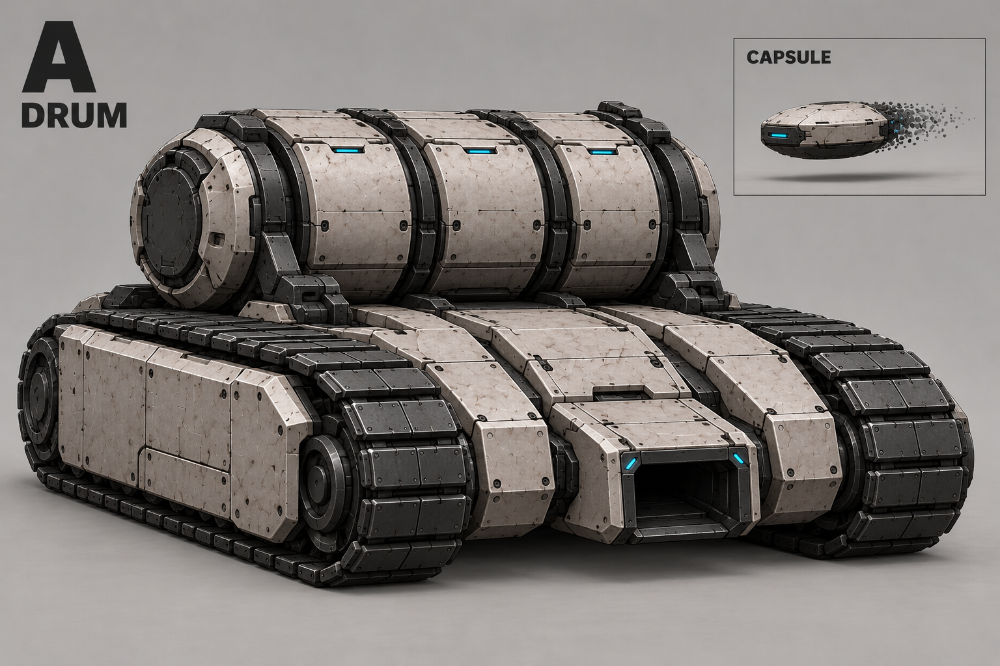
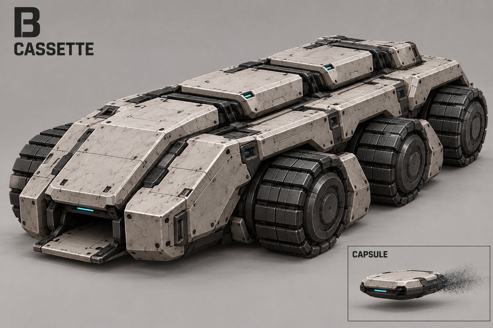
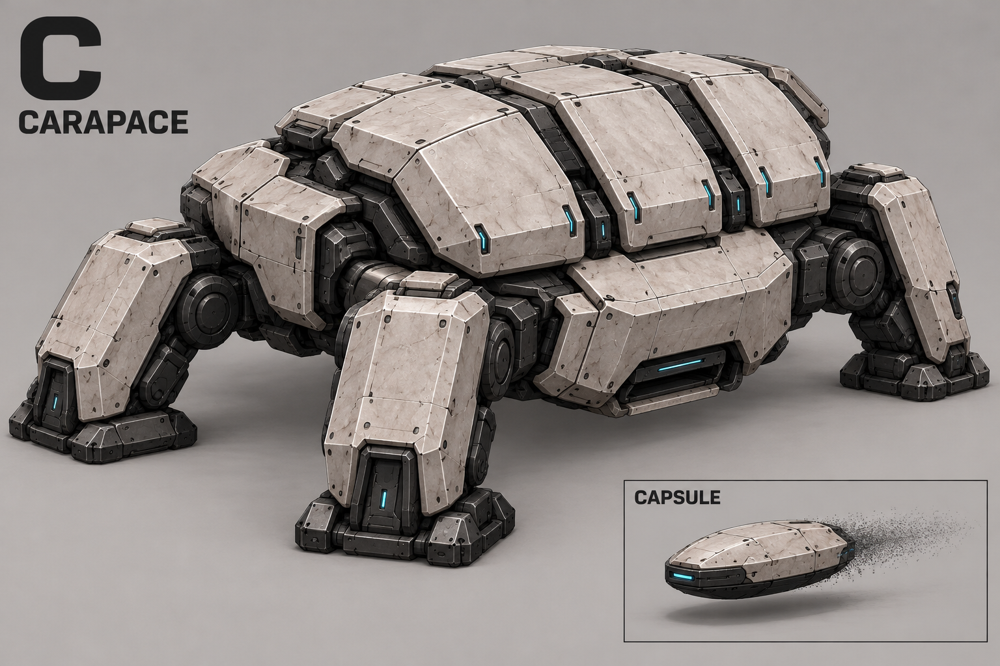
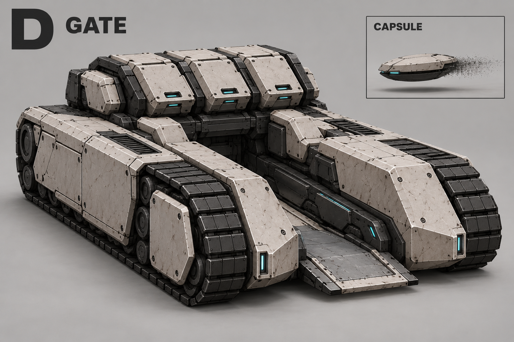
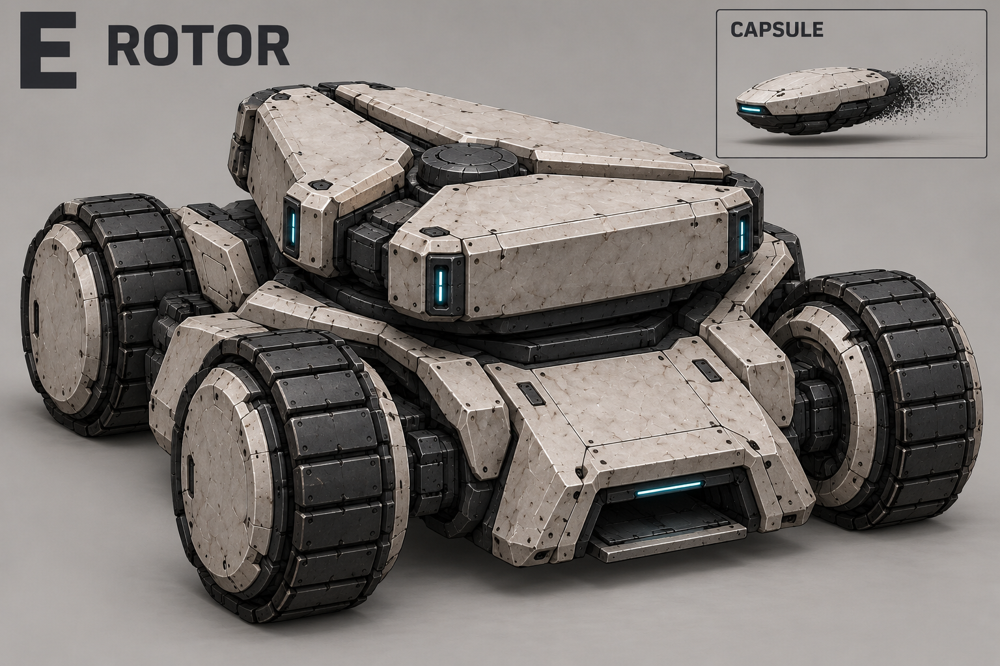
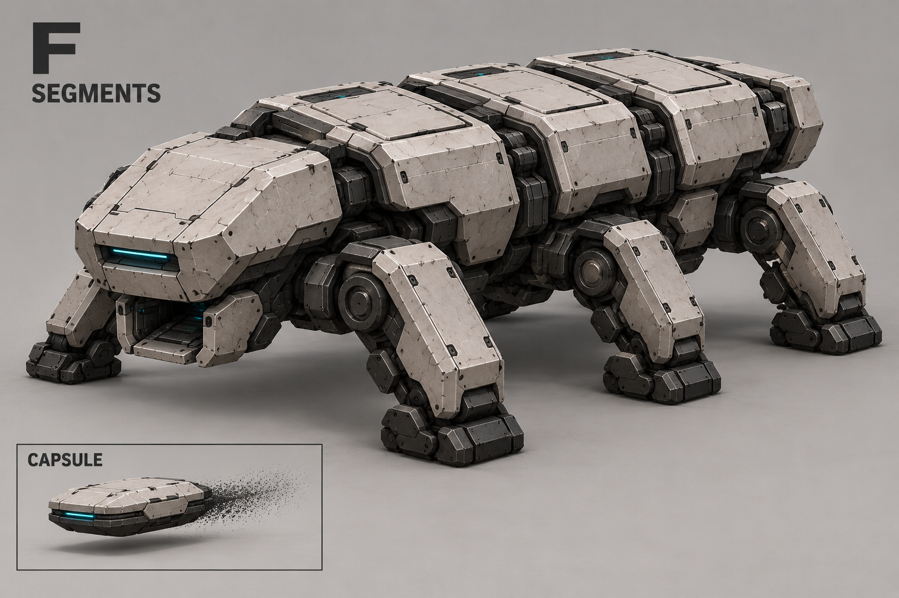

A — Барабан
Поперечный барабан над низким гусеничным корпусом; один выпускной канал.

Выбран D — «Шлюз». Название юнита рабочее.
Старт: 1 граната. Вместимость: 3. Пополнение за ресурсы и время, вручную или автоматически. Граната скользит к цели; избежать взрыва можно выходом из области.
Виды магазинов и шасси — предложения. Три секции не означают тройной залп. Модельный лист D добавлен; точность проекций проверяется на 3D-блокинге.
Все концепты · Описание · Промпты
Нейтральная поза, пять видов и отдельная капсула. Задняя панель и подача требуют проверки.

Поперечный барабан над низким гусеничным корпусом; один выпускной канал.

Шесть колёс, три крышки ячеек вдоль корпуса, выход в носу.

Четыре ноги и широкий панцирный корпус; выпуск снизу спереди.

Две гусеничные боковины вокруг открытого низкого канала выпуска.

Четыре колеса и трёхсекционный роторный магазин.

Шесть коротких ног, вытянутый корпус с тремя секциями.
